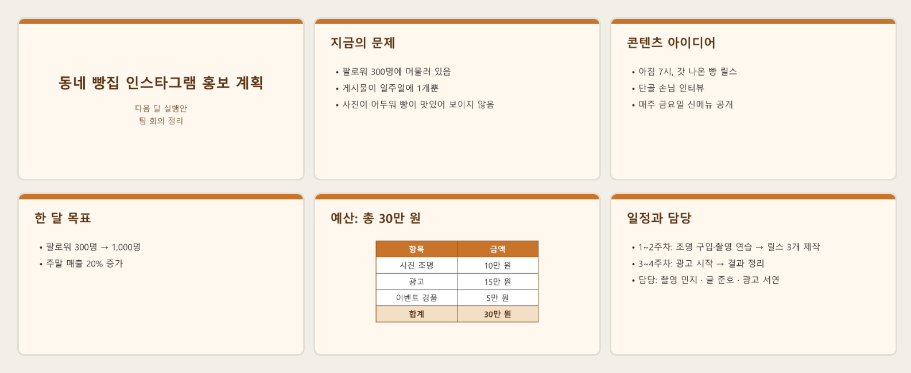
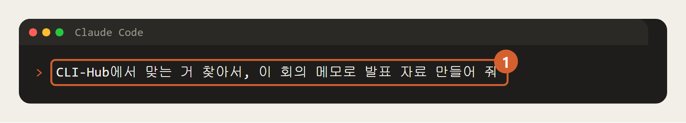
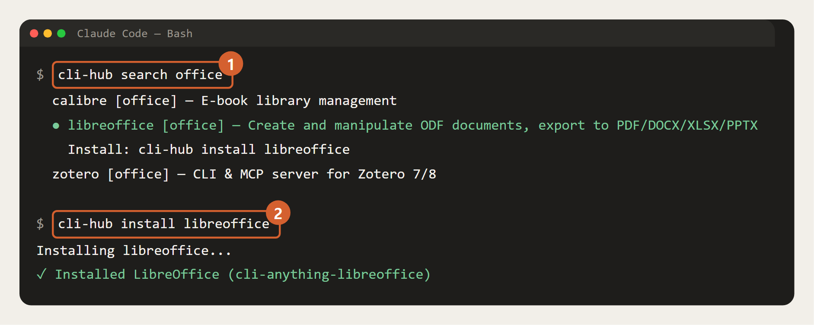
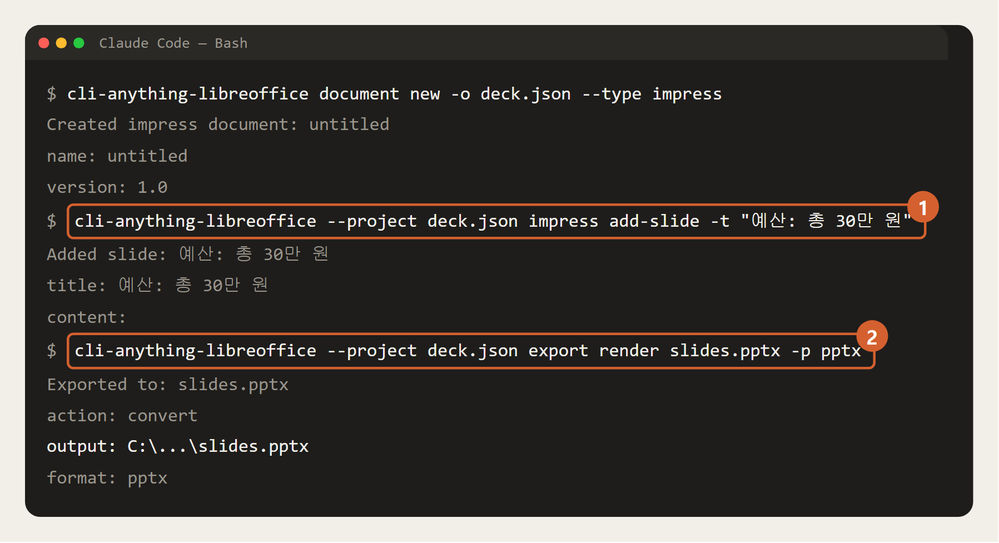

CLI-Anything은 프로그램을 클로드 코드가 칠 수 있는 명령어로 바꿔 주는 무료 오픈소스(Apache-2.0)예요. 무료 오피스·사진 편집기·방송 프로그램 등 이미 만들어 둔 명령 도구가 100개 넘게 있어서(CLI-Hub), 클로드한테 '맞는 거 찾아서 해 줘'라고 하면 알아서 골라 깔고 일을 끝내요. 목록에 없는 프로그램은 소스 코드를 읽고 새로 만들어요.

터미널에서 npx skills add HKUDS/CLI-Anything --skill cli-hub-meta-skill -g -y 한 줄이면 돼요(공식 설치 문서 기준). 이 스킬이 있으면 클로드가 CLI-Hub 목록에서 일에 맞는 명령 도구를 찾아 깔 줄 알아요.
발표 자료·문서·표는 LibreOffice, 사진은 GIMP, 방송 장면은 OBS처럼, 일에 맞는 프로그램을 평소처럼 깔아 둬요. 어떤 프로그램이 있는지는 허브 사이트 hkuds.github.io/CLI-Anything 에서 볼 수 있어요.
클로드 코드를 열고 'CLI-Hub에서 맞는 거 찾아서, ○○ 해 줘'라고만 해요(1). 파일이 있으면 그 폴더에서 열어요.

클로드가 cli-hub search 로 맞는 도구를 찾고(1) cli-hub install 로 깔아요(2). 깔린 도구는 cli-anything-<프로그램> 이름의 명령이에요.

클로드가 깔린 명령으로 슬라이드를 만들고(1) 프로그램을 창 없이 돌려 pptx·pdf로 내보내요(2). 다 되면 파일이 그 폴더에 생겨요.

클로드 코드에서 /plugin marketplace add HKUDS/CLI-Anything → /plugin install cli-anything 으로 플러그인을 깔고, /cli-anything <프로그램 소스 폴더 또는 깃허브 주소> 를 쳐요. 클로드가 소스를 읽어 명령 도구를 설계·구현하고, 시험(테스트)까지 돌린 뒤 설치해요. 이 정리의 시험에선 한 프로그램에 24분쯤 걸렸고 테스트 117개가 통과했어요. 부족한 기능은 /cli-anything:refine <폴더> "더 필요한 기능" 으로 넓혀요.
처음 한 번 — 터미널에서
npx skills add HKUDS/CLI-Anything --skill cli-hub-meta-skill -g -y
클로드 코드에서
CLI-Hub에서 맞는 거 찾아서, 이 폴더의 회의 메모로 발표 자료 만들어 줘. pptx랑 pdf로 저장해 줘.
클로드 없이 목록을 보고 싶을 때
pip install cli-anything-hub cli-hub list cli-hub install libreoffice
목록에 없는 프로그램 — 클로드 코드 안에서
/plugin marketplace add HKUDS/CLI-Anything /plugin install cli-anything
플러그인을 깐 뒤
/cli-anything https://github.com/<프로그램 저장소>
문서·허브
https://github.com/HKUDS/CLI-Anything
도움이 되셨다면
@ai.antenna.kr
에서 바로 쓰는 AI 활용법을 계속 올립니다.